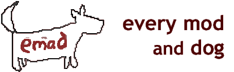

Un MOD pour Baldur's Gate II: Les ombres d'Amn
Version 11
Développé
par : Cliffette
Languages: English, German, Russian, French
Supported Games: BGII, BGT, BGII:EE, EET
EMaD Forum de support
EMaD page d'accueil
Baldur's Gate, Festival de Nashkell : Gazib le magnifique, La jeune fille embarrassée par la pierre et Seigneur Binky le Bouffon.
Baldur's Gate II, Tente du cirque sur la promenade de Waukyne : Kala, Esclave de plaisir, Muloups, Ombres et ténèbres.
Quelque part en cours de route, nous avons cessé de nous amuser.
Every Mod and Dog (EMaD) est un mod basé sur WeiDU qui ajoute une sélection de petites diversions et quêtes secondaires à Baldur's Gate II : Les ombres d'Amn, avec l'extension Le trône de Bhaal, ou à la nouvelle Enhanced Edition, ou aux projets de conversion BGT ou EET. Son objectif principal est de retrouver l'esprit plus dynamique et plus aventureux tel qu'il était trouvé dans le Baldur's Gate original.
Aucun des éléments inclus dans ce mod n'interfèrent directement avec l'intrigue principale du jeu original et toutes les quêtes sont facultatives. Certaines des quêtes ont été inspirées par les différentes compétition "Iron Modder" sur le site Pocket Plane Group.
Ce mode est en perpétuel développement, donc consultez régulièrement les mises à jour ! Les éléments suivants sont inclus dans la version actuelle de ce mod :
A l'origine commencé comme une tentative de pratiquer le "iron" modding, ce composant s'est développé en quelque chose de plutôt... buggé. Vous rencontrez une femme avec une coiffure des mauvais jours et un problème choquant dans la nature sauvage des collines d'Umar. Aidez-la, et vous gagnerez un petit ami assez irritant.
Le concours Iron Modder 4 s'est déroulé sur le thème "Une promesse non tenue". Ce volet présente le troll amoureux, Tegenk, dont le bonheur dépend de votre capacité à l'aider à tenir sa promesse. Vous pouvez trouver Tegenk dans la nature sauvage du bosquet du druide.
Parfois, il vous semble que le monde entier est contre vous. Vous vous êtes disputée avec votre amant, votre meilleur ami d'enfance est en cellule et vous venez d'avoir une nouvelle altercation avec un voleur/vampire/pirate ayant l'intention de vous trancher la gorge. Parfois, un enfant de Bhaal a juste besoin d'une bonne dose d'amour inconditionnel. Ce composant introduit un loup errant qui semble aimer vous suivre partout. Il est calme, peu exigeant, et aucune formation à l'utilisation des toilettes n'est requise. On peut le trouver caché dans les forêts entourant les ruines du temple.
Juste quand vous pensez avoir résolu tous les problèmes de romance chez les Jermiens dans les collines d'Umar, une nouvelle série de problèmes apparaît. NB : Cette quête ne peut être accomplie que si vous n'avez pas encore voyagé entre les plans via la sphère planaire.
Ainsi nommé parce que le composant "Random Encouters" a déjà été pris . Ce composant ajoutera une sélection de personnages au jeu pour que votre enfant de Bhaal ait encore plus d'étrangers avec qui bavarder (ou menacer/utiliser/tuer selon le cas). L'expérience et les objets acquis lors de ces quêtes sont si minuscules/inutiles que les rencontres ne sont pas répertoriées comme des quêtes distinctes. Mais il est à espérer qu'elles retranscrivent les impressions de certains des épisodes les plus bizarres du Baldur's Gate original. Pensez à Gazib le Magnifique, et vous saurez de quoi je parle.
** Avertissement ** Si vous êtes un puriste des royaumes oubliés qui est concerné par le maintien de tout ce qui est canon, alors il est plus que probable que ce mod heurtera votre sens de ce qui est une possibilité et de ce qui ne l'est pas dans l'univers des RO. Si le quatrième mur n'est jamais franchi, certaines lois de l'existence des RO pourraient l'être. Jouez à vos risques et périls !
Télécharger la dernière version ici.
Windows
Le mod est conditionné et installé avec WeiDU et est distribué sous la forme d'une archive auto-extractible. Pour l'installer, il suffit de double-cliquer sur l'archive et de suivre les instructions à l'écran.Les fichiers peuvent également être extraits de l'archive en utilisant WinRAR. Si l'extraction est correcte, vous devriez avoir un dossier emad et setup-emad.exe dans votre dossier BG2 . Pour installer, il suffit de double-cliquer sur setup-emad.exe et de suivre les instructions à l'écran.
Veuillez exécuter setup-emad.exe dans votre dossier BG2. pour réinstaller, désinstaller ou modifier d'une autre manière les composants.
Mac OS X
Si le mod était déjà installé, il faut le désinstaller avant d'extraire la nouvelle version. Le mod est conditionné et installé avec WeiDU. Pour l'installer, il suffit d'extraire le contenu du mod dans votre dossier BG2. Si l'extraction est correcte, vous devriez avoir un dossier emad, setup-emad, et setup-emad.command dans votre dossier BG2. Pour l'installer, il suffit de double-cliquer sur Setup-emad.command et de suivre les instructions à l'écran.Linux
Téléchargez la dernière version de WeiDU pour Linux ici et extrayiez (au moins) leWeiDU , les exécutables weinstall et Tolower dans un répertoire $PATH (par exemple /usr/bin). Ensuite, ouvrez un terminal, cd à votre répertoire d'installation de BG2 ,lancez `tolower' et répondez Y aux deux requêtes.Vous pouvez éviter d'utiliser la deuxième option (linux.ini) si vous l'avez déjà fait une fois dans le même répertoire. Pour gagner du temps, les archives sont déjà tolowerisées, il n'est donc pas nécessaire de recourir à la première option (noms de fichiers en minuscules) soit si vous n'avez extrait que ce mod depuis la dernière fois que vous avez abaissé la casse du nom de fichier. Si vous n'êtes pas sûr, vous pouvez lancer tolower et choisir parmi les deux options celle qui est la plus sûre.
Ensuite, lancez 'weinstall emad' depuis le répertoire d'installation de votre jeu pour installer ou désinstaller le mod.
Pour désinstaller, double-cliquez sur le fichier setup-emad.exe (ou setup-emad pour OS X) et entrez les commandes données pour la désinstallation. Ensuite, vous pouvez supprimer les éléments suivants fichiers :
- setup-emad.tp2
- setup-emad.debug
- setup-emad.exe/setup-emad
- Setup-emad.command
- et le contenu du sous-dossier de l'"emad"
EMaD devrait être compatible avec tous les autres mods WeiDU, bien que des conflits soient toujours possibles. Si vous en découvrez un veuillez le signaler sur le forum de support EMaD (lien ci-dessus).
Si vous trouvez un bug, veuillez visiter le forum de support EMaD (lien ci-dessus) et y poster les détails de votre bug. Les plaintes et les commentaires peuvent également être adressés au forum.
Trouver les personnages/quêtes supplémentaires.
Je vous recommande vivement de jouer au jeu en croisant les personnages au fur et à mesure. La plupart d'entre eux sont conçus de manière à ce qu'ils s'approcheront de vous quand ils vous verront, ou ont une couleur si improbable que vous ne pouvez pas vous empêcher de les remarquer. Cependant...
Composant Personnage - Quartier - [X.Y] Une aventure classée Z
Rizza - Collines d'Umar - [3983.1106]
La promesse d'un Troll
Tegenk - Étendues sauvages du Bosquet aux druides - [718.1430]
Cerese - Franc-marché - [1415.2740]Le meilleur ami de l'enfant de Bhaal
Moxen - Auberge des collines d'Umar
Loup - Ruines du temple - [3022.1795] (après avoir rencontré Moxen)Sous son charme
Dorc - Collines d'Umar, à l'extérieur de la maison des Jermiens - [4290.2049] (Après avoir fini la quête de Jermien)
Joaen - Dans la maison des JermiensPot-pourri de personnages
Beyra - Bas quartier - [270.2262]
Clady le Magnifique - Bas quartier - [2931.1317]
Seigneur Jumpalota - District du Gouvernement - [3044.3417]
Nua Nein - District du Gouvernement - [2577.2289]Conseils et aide au hasard.
Le meilleur ami de l'enfant de Bhaal : Après que le loup ait montré sa vraie nature (la dernière fois qu'il le fait c'est au moment ou vous atteignez Brynnlaw), il partira à moins que vous ne soyez un ranger ou que votre charisme au moins égal à 16. Il n'y a pas d'autre moyen de le garder.
EMaD et les idées à l'intérieur sont les méchantes trouvailles de Cliffette. Ne dites pas que le mod est de vous (aussi, pourquoi le voudriez-vous ?) et nous serons tous contents.
BALDUR'S GATE II: LES OMBRES D'AMN, BALDUR'S GATE II : LE TRÔNE DE BHAAL : © 2000, 2001 Bioware Corp. Tous Droits Réservés.
EMaD n'est pas développé, soutenu ou approuvé par BioWare ou Interplay/Black Isle.
Toutes les images et le contenu de ce mod sont protégés par le droit d'auteur BioWare, Interplay/Black Isle ou Wizards of the Coast, à l'exception de ceux (généralement les icônes d'inventaires/images de description) qui ont été réalisées par cliffette.REDISTRIBUTION NOTE: EMaD a été créé pour être gracieuse utilisé par tous les joueurs de Baldur's Gate II : les ombres d'Amn, sauf ceux qui souhaitent donner de grosses sommes d'argent à cliffette. EMaD ne peut être vendu (malgré mes efforts), publié, compilé ou redistribué sous quelque forme que ce soit sans le consentement de son auteur.
Écriture - cliffette
Codage - cliffette
Objets/images - cliffette
Bugs - quelqu'un d'autreMerci à l'équipe du PPG, qui m'a appris tout ce que je sais sur le modding. Et merci à Icelus, parce que j'ai piqué son modèle UB pour ce readme :). Un grand merci à jcompton, pour ses compétitions Iron modders et l'énorme contribution à la communauté du modding (principalement sous la forme d'un ping-pong incessant des auteurs d'outils d'IE, quoi qu'il en dise).
Vous trouverez ci-dessous des liens vers des sites communautaires :
The Pocket Plane Group
The Gibberlings Three
(Le merveilleux) Infinity Engine Structures Description Project
(L'également merveilleux) Near Infinity
(Nous n'en sommes pas dignes !) WeiDU
C'est mon readme et je peux brancher qui je veux.
Version 1 - Première diffusion
AJOUTS
- Une aventure classée Z
- La promesse d'un troll
- Le meilleur ami de l'enfant de Bhaal
MODIFICATIONS
- Une aventure classée Z : L'aventure, anciennement connue comme une non-entrée de Cliffette pour l'IM4, a maintenant été rendue moins rudimentaire.
CORRECTIONS DE BUG
- Une aventure classée Z : Les icônes d'inventaire ont été corrigées et s'affichent désormais correctement.
Version 2 - Mise à jour rapide
AJOUTS
- Composant Pot-pourri de personnages (Beyra et Clady).
MODIFICATIONS
- La procédure d'installation a été mise à jour pour utiliser des fichiers .bat plutôt que .exe.
- Le meilleur ami de l'enfant de Bhaal : Moxen a maintenant un meilleur script de combat. Quelques modifications mineures. Correction du spoiler : Le loup se transforme maintenant juste avant de mourir.
- Sections des spoilers ajoutée au readme.
CORRECTIONS DE BUG
- Aucun
Version 3
AJOUTS
- Sous son charme
- Composant Pot-pourri de personnages (Seigneur Jumpalota et Nua Nein)
MODIFICATIONS
- Nom du mod chang en EMaD.
- Retour à une installation standard WeiDU.
- Apparence du Readme changée.
- Une aventure classée Z : La recherche de la ruche est maintenant comme un jeu plus chaud/plus froid, grâce au retour de Dirk Gently
- Modifications mineures des dialogues (les fautes de frappe, le dialogue de Tegenk est désormais moins mièvre, etc.).
CORRECTIONS DE BUG
- Maintenant la bague de Tegenk ne fait que MODIFIER la coloration du joueur au lieu de le polymorphoser en troll.
- Le loup apparaît maintenant sur la bonne carte, selon que vous avez ou non vaincu le seigneur de l'ombre (oups)
Version 4
AJOUTS
- Numéro de version ajouté
MODIFICATIONS
- Mise à niveau vers Weidu v210.
CORRECTIONS DE BUG
- Le loup causait toujours un CTD avant que vous ne vainquiez le Seigneur de l'Ombre.
Version 5
MODIFICATIONS
- Mise à niveau vers Weidu v213.
CORRECTIONS DE BUG
- Retrait du setup.bat.
Version 6
MODIFICATIONS
- Mac : changement en README command.
- Mise à niveau vers Weiduv217.
CORRECTIONS DE BUG
- Patch de compatiblité de EMaD, CtB et MunchMod de Lollorian - Tegenk/cromappend.baf
Version 7
MODIFICATIONS
- Mise à niveau vers Weidu v231.
CORRECTIONS DE BUG
- La promesse d'un troll : La création de Cerese pouvait bloquer la quête ou faire planter le jeu
- La cinématique du retour de Cerese dans le bosquet ne fait plus planter le jeu
Version 8
MODIFICATIONS
- Maintenant compatible avec BG2EE
- Entièrement tra-ifié pour faciliter la traduction
CORRECTIONS DE BUG
- Suppression d'une quête inachevée (contrefaçon) dans les options d'installation
Version 9
MODIFICATIONS
- Ajout de la traduction allemande ; merci à Leonardo Watson
- Dans le cadre de la nouvelle traduction allemande, Leo a également procédé à la tra-ification complète du mod pour les futures traductions. Merci encore !
Version 10
MODIFICATIONS
- Ajout de la traduction russe ; merci à Austin
- Readme mis à jour
Version 11
MODIFICATIONS
- Ajout de la traduction française ; merci à Deratiseur
- Readme mis à jour
- Ajout du readme français
- added folder libiconv-1.9.2-1-src.7z with iconv licence info
- Integrated BWP-Fixes: Lollorian's non-permanent Level Drain and 100% wild surges from Troll's Whisper ring